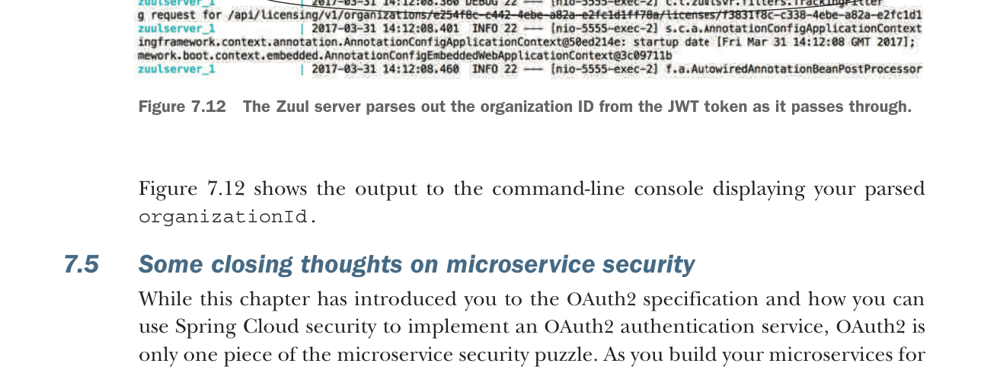

The Zuul server parses out the organization ID from the JWT token as it passes through.
Figure 7.12 shows the output to the command-line console displaying your parsed organizationId.
7.5 Some closing thoughts on microservice security
While this chapter has introduced you to the OAuth2 specification and how you can use Spring Cloud security to implement an OAuth2 authentication service, OAuth2 is only one piece of the microservice security puzzle. As you build your microservices for production use, you should be building your microservices security around the following practices:
- Use HTTPS/Secure Sockets Layer (SSL) for all service communication.
- All service calls should go through an API gateway.
- Zone your services into a public API and private API.
- Limit the attack surface of your microservices by locking down unneeded network ports.
Figure 7.13 shows how these different pieces fit together. Each of the bulleted items in the list maps to the numbers in figure 7.13.
Let’s examine each of the topic areas enumerated in the previous list and diagrams in more detail.
Use HTTPS/Secure Sockets Layer (SSL) for all service communication
In all the code examples in this book, you’ve been using HTTP because HTTP is a simple protocol and doesn’t require setup on every service before you can start using the service.
In a production environment, your microservices should communicate only through the encrypted channels provided through HTTPS and SSL. The configuration and setup of the HTTPS can be automated through your DevOps scripts.